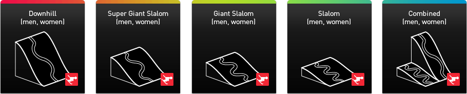

Alpine ski Top
The alpine ski resort Rosa Khutor is situated on the northern slope of the Aibga ridge. 43 hа of race courses for sportive events will be constructed, with a total length of about 9 km, complying with the International Ski Federation (FIS) requirements; located between 940 and 1945 m above sea level with one finish area.
The uniqueness of this place is that the construction of pistes for carrying out all 10 kinds of alpine skiing competitions, listed FIS to Olympic events, is technically possible. The capacity of facility is up to 18,000 (including seating for 8,000 people and standing room for 10,000).
On the territory of alpine ski centre Rosa Khutor in February, 2011 the European Cup will be staged there, and in February, 2012 — the World Cup.
Alpine events

Snowboard park and freestyle centre Top

A Snowboard Park and Freestyle Centre will be created to the east of Rosa Khutor Plateau at an elevation of 1100–1200 m above see level. On September, 2008 the IOC approved transferring the Freestyle Centre from the Alpine Ski Resort «Grand Hotel Polyana» to the Rosa Khutor Plateau and its association with Snowboard Park for the purpose of more compact arrangement of Olympic Venues, and also for the creation of the most comfortable conditions both for Olympic sportsmen and for spectators.
The capacity of the Snowboard Park is up to 15,000 people (seating for 5,000 people and standing room for 10,000). The capacity of the Freestyle Centre is up to 14,000 people (seating for 4,000 people and standing room for 10,000). These facilities are to be put into operation by the end of 2011 for test competitions.
Freestyle-snowboard events on the programme of the Olympic Winter Games
Snowboard (6 events)
Freestyle (6 events)

|
— We have won only two medals (silver and bronze) in all the history of Winter Olympic Games in my discipline, and with the opening of pistes on the alpine ski resort Rosa Khutor I hope that we will achieve those successes in alpine ski of which we can be proud for many years.
Svetlana Gladysheva President of Russian Alpine-Ski and Snowboard Federation |
Mountain Olympic sub-village Top
The Mountain Olympic Sub-village will be located on the Rosa Khutor Plateau at 1100 m above see level.
The capacity of the Mountain Olympic Sub-village will be 2 600 places (1 400 4 star rooms). The village occupies an area of 54 hectares in a picturesque location with the fine panoramic views over the Aibga and Psehako mountains.
The object is to be put into operation in 2013.
| Share: |
|